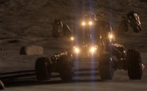
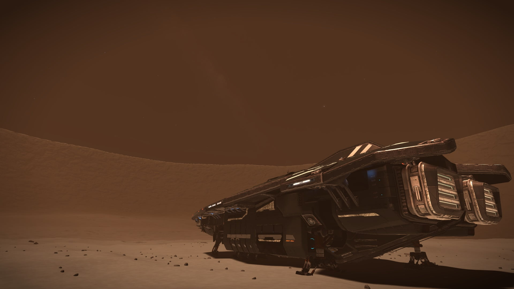

The SRV whirls up a big dust trail as Engalo goes full throttle towards the target on his wavescanner. The SRV climbs up a small hill giving Engalo a good overview of the area towards the wavescanner target. Engalo hammers on the brakes. “What the … It’s a couple of eagles” Engalo says out loud to himself, almost waiting a response from someone.In front of him, about 1 kilometer out two eagles is landed. One of them has an all blue shiny paintjob, looked to be brand new. The other however was orange but gradually turning black the longer towards the nose of the ship you got, it looked banged up Engalo could just see some smoke come up from the starboard side of the wing.
In an attempt to identify the two ships Engalo pushes the target blip on he’s radar HUD, targeting the blue ship. “Scanning” Almost at the same moment Engalo pushed the button he could see two tiny figures running up from behind the orange eagle and swiftly making theyr way in to the cockpits. “Uh oh… that was possibly not such a good idea” Engalo mutters to himself. In all haste Engalo disengage the target and backs down the hill turning of all SRV systems in a hope to become invisible. A few tense moments pass. Nothing. Then a faint “Whoomp” is heard. The unmistakable sound of a ship jumping. A few more moments pass, only one whoomp though. Engalo opens the side door on the SRV, immediately activating the visor on his space suit. Looking around, there were no sign of the second eagle. The walk up the hill that seemed so small in the SRV took a lot of energy, the sand soft and heavy to walk inn.
Finally up, Engalo peers cautiously over the ridge. Nothing to be seen, Engalo scans the horizon and suddenly, there, just about 2 kilometers away but heading straight for him he sees it. A roar from the Eagles engines sounded after a few seconds. Engalo standing on the ridgetop, transfixed for a moment looking at the eagle, and then as fast as the legs could move in the soft sand Engalo runs back down to the SRV. Before all the systems is restarted the Eagle passed overhead making a big loop and then bearing back down on the SRV guns blazing. The shields still recharging the SRV takes a bad hit to the left rear tire, luckily only the outer one is damaged completely.
“Shields online” engalo activates the turret, swings it around and hurls a barage towards the Eagle and in the same instance giving full throttle. The eagle passes again over head smacking some good hits directly to the shields bringing them down to forty five percent. Engalo could see the eagle beginn another loop and quickly Engalo pushes the SRV in to a violent spinn whirling up a massive dust cloud. Using the directional compass for navigation Engalo hammers down the throttle, at the same moment the SRV leaves the dust cloud Engalo fires the dual repeater turret at the Eagle ramming inn some good hits. The canopy shatters on the eagle and pices of glass falls around the SRV as the Eagle passes. Looking at the radar Engalo could see the distance to the eagle growing until it disappears. “My god! Stumbled upon some smugglers no doubt” Engalo says to himself.
Then Engalo notice the target data. “Oh no no nooo” Engalo’s face turns pale. Target data: Josh Winters, Ship: Eagle, Faction: The Dark Wheel. “This is no ordinary mundane simple smugglers” Engalo mutters. “We need to get the hell out of here parts or no parts.”
Engalo calls Brad on the comms:- “Brad, status on that part? I just had a brush with an eagle from the Dark Wheel. He didn’t seem to happy when I blew a hole in he’s canopy”
Brad:- ” WHAT?!”
Engalo:- “Hey, I did NOT fire the first shoot! Status?”
Brad:- ” Uhm… eh… They should be here within 15 minutes.”
Engalo:- “Good, I’m about 15 minutes out myself. Make sure everything is ready when I get there and activate defences”
Brad:- “Fu*#ing shi….>”
The com signal is broken and Engalo could only imagine the rest of that last sentence from Brad, who where understandable not pleased with the situation Engalo just had throwed them into. 15 minutes later Engalo reach the Anaconda just to see the dropship with the spare parts leaving. Quickly Engalo scoops up the container and drives towards the vehicle hangar. As the SRV is pulled back inn Engalo starts thinking, what where they doing since it’s apparently worth killing for?

Erik meets Engalo in the hangar bay:- “What are you doing out there?! Do you know who they are?! We are as good as dead…and thats if they are in a good mood!”
Engalo:- “Erik, I just followed the wave scanner target and came over what ever they where doing. Then one of them attacked without provocation whilst the other left. What would you have me do? Just roll over and die? He most likely didn’t even manage to scan me before I had a lucky shoot and smashed he’s canopy. They don’t know who and where we are. Just get these parts installed so we could get the hell out of here before he brings all he’s friends over for a barbeque! How long do you need?”
Erik:- “I need atleast an hour”
Engalo:- “It’s just a circuit board man!”
Erik:- “It needs recalibrating as well commander, and that will take about 45 minutes”
Engalo:- “Crap, all right. Hop to it, I’ll send Brad down to help you when I reach the bridge.”
Erik fills every pocket with circuit boards and tools from the container and swiftly runs towards engineering. Engalo takes the lift up to the bridge, in the door on the bridge deck Brad meets Engalo. “Did he scan you?” Brad asks. “No, I don’t belive he managed. It all happened realy fast, and judging from the hastily retreat when he’s canopy blew, I guess he didn’t have time to circle back and have a scan of my SRV. My god, he could be dead by now for all we know.” Engalo replies.
Brad:- “I hate to say it but, I do hope he’s dead”
Engalo:- “Erik wanted some help down there. I’ll take over up here.”
Brad:- “Aye aye”
Brad yet again threw around some outbursts of profanity as he left the bridge. Quickly settling in to the Commander’s chair Engalo starts shutting down none essential systems to give the ship a smaler heat signature. “Hopefully that would make it harder to find us” Engalo mutters. Rerouting all energy to systems and weapons Engalo makes the ship as ready as it gets beeing a sitting duck on the ground. “Now all we could do is wait and hope for the best” Engalo says to himself.
45 minutes later there are still no sign of any ships. Over the internal comms Eric’s voice could be heard:- “All good to go Commander.” :- “Great work you two! Starting up navigation and firing engines.” Engalo replies while thinking: “All’s well that ends well.”
The Anaconda lifts slowly from the ground thrusters roaring and right then suddenly. Five dots appear on the radar screen, jumping around as the radar struggle to pinpoint the exact location. “Oh, crap” Engalo mutters whilst activating the internal comms:- “Five bougies inbound guys… Sorry, looks like we ran out of luck”
To be continued…